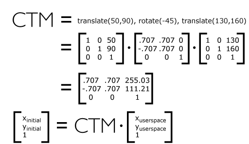

For all media, the SVG canvas describes "the space where the SVG content is rendered." The canvas is infinite for each dimension of the space, but rendering occurs relative to a finite rectangular region of the canvas. This finite rectangular region is called the SVG viewport. For visual media ([CSS2], section 7.3.1) the SVG viewport is the viewing area where the user sees the SVG content.
The size of the SVG viewport (i.e., its width and height) is determined by a negotiation process (see Establishing the size of the initial viewport) between the SVG document fragment and its parent (real or implicit). Once that negotiation process is completed, the SVG user agent is provided the following information:
Using the above information, the SVG user agent determines the viewport, an initial viewport coordinate system and an initial user coordinate system such that the two coordinates systems are identical. Both coordinates systems are established such that the origin matches the origin of the viewport (for the root viewport, the viewport origin is at the top/left corner), and one unit in the initial coordinate system equals one "pixel" in the viewport. (See Initial coordinate system.) The viewport coordinate system is also called viewport space and the user coordinate system is also called user space.
Lengths in SVG can be specified as:
The supported length unit identifiers are: em, ex, px, pt, pc, cm, mm, in, and percentages.
A new user space (i.e., a new current coordinate system) can be established at any place within an SVG document fragment by specifying transformations in the form of transformation matrices or simple transformation operations such as rotation, skewing, scaling and translation. Establishing new user spaces via coordinate system transformations are fundamental operations to 2D graphics and represent the usual method of controlling the size, position, rotation and skew of graphic objects.
New viewports also can be established. By establishing a new viewport, you can redefine the meaning of percentages units and provide a new reference rectangle for "fitting" a graphic into a particular rectangular area. ("Fit" means that a given graphic is transformed in such a way that its bounding box in user space aligns exactly with the edges of a given viewport.)
The SVG user agent negotiates with its parent user agent to determine the viewport into which the SVG user agent can render the document. In some circumstances, SVG content will be embedded (by reference or inline) within a containing document. This containing document might include attributes, properties and/or other parameters (explicit or implicit) which specify or provide hints about the dimensions of the viewport for the SVG content. SVG content itself optionally can provide information about the appropriate viewport region for the content via the 'svg/width' and 'svg/height' XML attributes on the outermost svg element. The negotiation process uses any information provided by the containing document and the SVG content itself to choose the viewport location and size.
The 'svg/width' attribute on the outermost svg element establishes the viewport's width, unless the following conditions are met:
Under these conditions, the positioning properties establish the viewport's width.
Similarly, if there are positioning properties specified on the referencing element or on the outermost svg element that are sufficient to establish the height of the viewport, then these positioning properties establish the viewport's height; otherwise, the 'svg/height' attribute on the outermost svg element establishes the viewport's height.
If the 'svg/width' or 'svg/height' attributes on the outermost svg element are in user units (i.e., no unit identifier has been provided), then the value is assumed to be equivalent to the same number of "px" units (see Units).
In the following example, an SVG graphic is embedded inline within a parent XML document which is formatted using CSS layout rules. Since CSS positioning properties are not provided on the outermost svg element, the width="100px" and height="200px" attributes determine the size of the initial viewport:
<?xml version="1.0" standalone="yes"?>
<parent xmlns="http://some.url">
<!-- SVG graphic -->
<svg xmlns='http://www.w3.org/2000/svg'
width="100px" height="200px" version="1.1">
<path d="M100,100 Q200,400,300,100"/>
<!-- rest of SVG graphic would go here -->
</svg>
</parent>
The initial clipping path for the SVG document fragment is established according to the rules described in The initial clipping path.
For the outermost svg element, the SVG user agent determines an initial viewport coordinate system and an initial user coordinate system such that the two coordinates systems are identical. The origin of both coordinate systems is at the origin of the viewport, and one unit in the initial coordinate system equals one "pixel" (i.e., a px unit as defined in CSS2 ([CSS2], section 4.3.2) in the viewport. In most cases, such as stand-alone SVG documents or SVG document fragments embedded (by reference or inline) within XML parent documents where the parent's layout is determined by CSS [CSS2] or XSL [XSL], the initial viewport coordinate system (and therefore the initial user coordinate system) has its origin at the top/left of the viewport, with the positive x-axis pointing towards the right, the positive y-axis pointing down, and text rendered with an "upright" orientation, which means glyphs are oriented such that Roman characters and full-size ideographic characters for Asian scripts have the top edge of the corresponding glyphs oriented upwards and the right edge of the corresponding glyphs oriented to the right.
If the SVG implementation is part of a user agent which supports styling XML documents using CSS2 compatible px units, then the SVG user agent should get its initial value for the size of a px unit in real world units to match the value used for other XML styling operations; otherwise, if the user agent can determine the size of a px unit from its environment, it should use that value; otherwise, it should choose an appropriate size for one px unit. In all cases, the size of a px must be in conformance with the rules described in CSS2 ([CSS2], section 4.3.2).
Example InitialCoords below shows that the initial coordinate system has the origin at the top/left with the x-axis pointing to the right and the y-axis pointing down. The initial user coordinate system has one user unit equal to the parent (implicit or explicit) user agent's "pixel".
A new user space (i.e., a new current coordinate system) can be established by specifying transformations in the form of a 'transform' attribute on a container element or graphics element or a 'viewBox' attribute on an 'svg', 'symbol', 'marker element', 'pattern' and the 'view' element. The 'transform' and 'viewBox' attributes transform user space coordinates and lengths on sibling attributes on the given element (see effect of the 'transform' attribute on sibling attributes and effect of the 'viewBox' attribute on sibling attributes) and all of its descendants. Transformations can be nested, in which case the effect of the transformations are cumulative.
Example OrigCoordSys below shows a document without transformations. The text string is specified in the initial coordinate system.
Example NewCoordSys establishes a new user coordinate system by specifying transform="translate(50,50)" on the third 'g' element below. The new user coordinate system has its origin at location (50,50) in the original coordinate system. The result of this transformation is that the coordinate (30,30) in the new user coordinate system gets mapped to coordinate (80,80) in the original coordinate system (i.e., the coordinates have been translated by 50 units in X and 50 units in Y).
Example RotateScale illustrates simple rotate and scale transformations. The example defines two new coordinate systems:
Example Skew defines two coordinate systems which are skewed relative to the origin coordinate system.
Mathematically, all transformations can be represented as
3x3 transformation matrices of
the following form:
Since only six values are used in the above 3x3 matrix, a transformation matrix is also expressed as a vector: [a b c d e f].
Transformations map coordinates and lengths from a new
coordinate system into a previous coordinate system:

Simple transformations are represented in matrix form as follows:


Transformations can be nested to any level. The effect of
nested transformations is to post-multiply (i.e., concatenate)
the subsequent transformation matrices onto previously defined
transformations:

For each given element, the accumulation of all
transformations that have been defined on the given element and
all of its ancestors up to and including the element that
established the current viewport (usually, the 'svg'
element which is the most
immediate ancestor to the given element) is called the
current transformation matrix or
CTM. The CTM thus represents the
mapping of current user coordinates to viewport
coordinates:

Example Nested illustrates nested transformations.
In the example above, the CTM within the third nested
transformation (i.e., the transform="translate(130,160)")
consists of the concatenation of the three transformations, as
follows:

The value of the 'transform' attribute is a <transform-list>, which is defined as a list of transform definitions, which are applied in the order provided. The individual transform definitions are separated by whitespace and/or a comma. The available types of transform definitions include:
All numeric values are <number>s.
If a list of transforms is provided, then the net effect is as if each transform had been specified separately in the order provided. For example,
<g transform="translate(-10,-20) scale(2) rotate(45) translate(5,10)"> <!-- graphics elements go here --> </g>
is functionally equivalent to:
<g transform="translate(-10,-20)">
<g transform="scale(2)">
<g transform="rotate(45)">
<g transform="translate(5,10)">
<!-- graphics elements go here -->
</g>
</g>
</g>
</g>
The 'transform' attribute is applied to an element before processing any other coordinate or length values supplied for that element. In the element
<rect x="10" y="10" width="20" height="20" transform="scale(2)"/>
the x, y, width and height values are processed after the current coordinate system has been scaled uniformly by a factor of 2 by the 'transform' attribute. Attributes x, y, width and height (and any other attributes or properties) are treated as values in the new user coordinate system, not the previous user coordinate system. Thus, the above 'rect' element is functionally equivalent to:
<g transform="scale(2)"> <rect x="10" y="10" width="20" height="20"/> </g>
The following is the Backus-Naur Form (BNF) for values for the 'transform' attribute. The following notation is used:
transform-list:
wsp* transforms? wsp*
transforms:
transform
| transform comma-wsp+ transforms
transform:
matrix
| translate
| scale
| rotate
| skewX
| skewY
matrix:
"matrix" wsp* "(" wsp*
number comma-wsp
number comma-wsp
number comma-wsp
number comma-wsp
number comma-wsp
number wsp* ")"
translate:
"translate" wsp* "(" wsp* number ( comma-wsp number )? wsp* ")"
scale:
"scale" wsp* "(" wsp* number ( comma-wsp number )? wsp* ")"
rotate:
"rotate" wsp* "(" wsp* number ( comma-wsp number comma-wsp number )? wsp* ")"
skewX:
"skewX" wsp* "(" wsp* number wsp* ")"
skewY:
"skewY" wsp* "(" wsp* number wsp* ")"
number:
sign? integer-constant
| sign? floating-point-constant
comma-wsp:
(wsp+ comma? wsp*) | (comma wsp*)
comma:
","
integer-constant:
digit-sequence
floating-point-constant:
fractional-constant exponent?
| digit-sequence exponent
fractional-constant:
digit-sequence? "." digit-sequence
| digit-sequence "."
exponent:
( "e" | "E" ) sign? digit-sequence
sign:
"+" | "-"
digit-sequence:
digit
| digit digit-sequence
digit:
"0" | "1" | "2" | "3" | "4" | "5" | "6" | "7" | "8" | "9"
wsp:
(#x20 | #x9 | #xD | #xA)
For the 'transform' attribute:
Animatable: yes.
See the 'animateTransform' element for information on animating transformations.
It is often desirable to specify that a given set of graphics stretch to fit a particular container element. The 'viewBox' attribute provides this capability.
All elements that establish a new viewport (see elements that establish viewports), plus the 'marker element', 'pattern' and 'view' elements have attribute 'viewBox'. The value of the 'viewBox' attribute is a list of four numbers <min-x>, <min-y>, <width> and <height>, separated by whitespace and/or a comma, which specify a rectangle in user space which should be mapped to the bounds of the viewport established by the given element, taking into account attribute 'preserveAspectRatio'. If specified, an additional transformation is applied to all descendants of the given element to achieve the specified effect.
A negative value for <width> or <height> is an error (see Error processing). A value of zero disables rendering of the element.
Example ViewBox illustrates the use of the 'viewBox' attribute on the outermost svg element to specify that the SVG content should stretch to fit bounds of the viewport.
<?xml version="1.0" standalone="no"?>
<svg width="300px" height="200px" version="1.1"
viewBox="0 0 1500 1000" preserveAspectRatio="none"
xmlns="http://www.w3.org/2000/svg">
<desc>Example ViewBox - uses the viewBox
attribute to automatically create an initial user coordinate
system which causes the graphic to scale to fit into the
viewport no matter what size the viewport is.</desc>
<!-- This rectangle goes from (0,0) to (1500,1000) in user space.
Because of the viewBox attribute above,
the rectangle will end up filling the entire area
reserved for the SVG content. -->
<rect x="0" y="0" width="1500" height="1000"
fill="yellow" stroke="blue" stroke-width="12" />
<!-- A large, red triangle -->
<path fill="red" d="M 750,100 L 250,900 L 1250,900 z"/>
<!-- A text string that spans most of the viewport -->
<text x="100" y="600" font-size="200" font-family="Verdana" >
Stretch to fit
</text>
</svg>
| Rendered into viewport with width=300px, height=200px |
Rendered into viewport with width=150px, height=200px |
|
|---|---|---|
 |
 |
View
this example as SVG (SVG-enabled browsers only)
The effect of the 'viewBox' attribute is that the user agent automatically supplies the appropriate transformation matrix to map the specified rectangle in user space to the bounds of a designated region (often, the viewport). To achieve the effect of the example on the left, with viewport dimensions of 300 by 200 pixels, the user agent needs to automatically insert a transformation which scales both X and Y by 0.2. The effect is equivalent to having a viewport of size 300px by 200px and the following supplemental transformation in the document, as follows:
<?xml version="1.0" standalone="no"?>
<svg width="300px" height="200px" version="1.1"
xmlns="http://www.w3.org/2000/svg">
<g transform="scale(0.2)">
<!-- Rest of document goes here -->
</g>
</svg>
To achieve the effect of the example on the right, with viewport dimensions of 150 by 200 pixels, the user agent needs to automatically insert a transformation which scales X by 0.1 and Y by 0.2. The effect is equivalent to having a viewport of size 150px by 200px and the following supplemental transformation in the document, as follows:
<?xml version="1.0" standalone="no"?>
<svg width="150px" height="200px" version="1.1"
xmlns="http://www.w3.org/2000/svg">
<g transform="scale(0.1 0.2)">
<!-- Rest of document goes here -->
</g>
</svg>
(Note: in some cases the user agent will need to supply a translate transformation in addition to a scale transformation. For example, on an outermost svg element, a translate transformation will be needed if the 'viewBox' attributes specifies values other than zero for <min-x> or <min-y>.)
Unlike the 'transform' attribute (see effect of the 'transform' on sibling attributes), the automatic transformation that is created due to a 'viewBox' does not affect the 'x', 'y', 'width' and 'height' attributes (or in the case of the 'marker element' element, the 'marker/markerWidth' and 'marker/markerHeight' attributes) on the element with the 'viewBox' attribute. Thus, in the example above which shows an 'svg' element which has attributes 'svg/width', 'svg/height' and 'viewBox', the 'svg/width' and 'svg/height' attributes represent values in the coordinate system that exists before the 'viewBox' transformation is applied. On the other hand, like the 'transform' attribute, it does establish a new coordinate system for all other attributes and for descendant elements.
For the 'viewBox' attribute:
Animatable: yes.
In some cases, typically when using the 'viewBox' attribute, it is desirable that the graphics stretch to fit non-uniformly to take up the entire viewport. In other cases, it is desirable that uniform scaling be used for the purposes of preserving the aspect ratio of the graphics.
Attribute preserveAspectRatio="[defer] <align> [<meetOrSlice>]", which is available for all elements that establish a new viewport (see elements that establish viewports), plus the 'image', 'marker element', 'pattern' and 'view' elements, indicates whether or not to force uniform scaling.
For elements that establish a new viewport (see elements that establish viewports), plus the 'marker element', 'pattern' and 'view' elements, 'preserveAspectRatio' only applies when a value has been provided for 'viewBox' on the same element. For these elements, if attribute 'viewBox' is not provided, then 'preserveAspectRatio' is ignored.
For 'image' elements, 'preserveAspectRatio' indicates how referenced images should be fitted with respect to the reference rectangle and whether the aspect ratio of the referenced image should be preserved with respect to the current user coordinate system.
If the value of 'preserveAspectRatio' on an 'image' element starts with 'defer' then the value of the 'preserveAspectRatio' attribute on the referenced content if present should be used. If the referenced content lacks a value for 'preserveAspectRatio' then the 'preserveAspectRatio' attribute should be processed as normal (ignoring 'defer'). For 'preserveAspectRatio' on all other elements the 'defer' portion of the attribute is ignored.
The <align> parameter indicates whether to force uniform scaling and, if so, the alignment method to use in case the aspect ratio of the 'viewBox' doesn't match the aspect ratio of the viewport. The <align> parameter must be one of the following strings:
The <meetOrSlice> parameter is optional and, if provided, is separated from the <align> value by one or more spaces and then must be one of the following strings:
meet (the default) - Scale the graphic such that:
In this case, if the aspect ratio of the graphic does not match the viewport, some of the viewport will extend beyond the bounds of the 'viewBox' (i.e., the area into which the 'viewBox' will draw will be smaller than the viewport).
slice - Scale the graphic such that:
In this case, if the aspect ratio of the 'viewBox' does not match the viewport, some of the 'viewBox' will extend beyond the bounds of the viewport (i.e., the area into which the 'viewBox' will draw is larger than the viewport).
Example PreserveAspectRatio illustrates the various options on 'preserveAspectRatio'. To save space, XML entities have been defined for the three repeated graphic objects, the rectangle with the smile inside and the outlines of the two rectangles which have the same dimensions as the target viewports. The example creates several new viewports by including 'svg' sub-elements embedded inside the outermost svg element (see Establishing a new viewport).
For the 'preserveAspectRatio' attribute:
Animatable: yes.
At any point in an SVG drawing, you can establish a new viewport into which all contained graphics is drawn by including an 'svg' element inside SVG content. By establishing a new viewport, you also implicitly establish a new viewport coordinate system, a new user coordinate system, and, potentially, a new clipping path (see the definition of the 'overflow' property). Additionally, there is a new meaning for percentage units defined to be relative to the current viewport since a new viewport has been established (see Units).
The bounds of the new viewport are defined by the 'x', 'y', 'width' and 'height' attributes on the element establishing the new viewport, such as an 'svg' element. Both the new viewport coordinate system and the new user coordinate system have their origins at ('x', 'y'), where 'x' and 'y' represent the value of the corresponding attributes on the element establishing the viewport. The orientation of the new viewport coordinate system and the new user coordinate system correspond to the orientation of the current user coordinate system for the element establishing the viewport. A single unit in the new viewport coordinate system and the new user coordinate system are the same size as a single unit in the current user coordinate system for the element establishing the viewport.
Here is an example:
<?xml version="1.0" standalone="no"?>
<svg width="4in" height="3in" version="1.1"
xmlns="http://www.w3.org/2000/svg">
<desc>This SVG drawing embeds another one,
thus establishing a new viewport
</desc>
<!-- The following statement establishing a new viewport
and renders SVG drawing B into that viewport -->
<svg x="25%" y="25%" width="50%" height="50%">
<!-- drawing B goes here -->
</svg>
</svg>
For an extensive example of creating new viewports, see Example PreserveAspectRatio.
The following elements establish new viewports:
Whether a new viewport also establishes a new additional clipping path is determined by the value of the 'overflow' property on the element that establishes the new viewport. If a clipping path is created to correspond to the new viewport, the clipping path's geometry is determined by the value of the 'clip' property. Also, see Clip to viewport vs. clip to 'viewBox'.
All coordinates and lengths in SVG can be specified with or without a unit identifier.
This is misleading – path data for example takes values that look like coordinates and lengths yet does not allow units.
When a coordinate or length value is a number without a unit identifier (e.g., "25"), then the given coordinate or length is assumed to be in user units (i.e., a value in the current user coordinate system). For example:
<text font-size="50">Text size is 50 user units</text>
Alternatively, a coordinate or length value can be expressed as a number followed by a unit identifier (e.g., "25cm" or "15em"). (Note that CSS defined properties used in a CSS style sheet or the 'style attribute' attribute require units for non-zero lengths, see SVG's styling properties.) The list of unit identifiers in SVG matches the list of unit identifiers in CSS: em, ex, px, pt, pc, cm, mm and in. The <length> type can also have a percentage unit identifier. The following describes how the various unit identifiers are processed:
One px unit is defined to be equal to one user unit. Thus, a length of "5px" is the same as a length of "5".
Note that at initialization, a user unit in the the initial coordinate system is equivalenced to the parent environment's notion of a px unit. Thus, in the the initial coordinate system, because the user coordinate system aligns exactly with the parent's coordinate system, and because often the parent's coordinate system aligns with the device pixel grid, "5px" might actually map to 5 devices pixels. However, if there are any coordinate system transformation due to the use of 'transform' or 'viewBox' attributes, because "5px" maps to 5 user units and because the coordinate system transformations have resulted in a revised user coordinate system, "5px" likely will not map to 5 device pixels. As a result, in most circumstances, "px" units will not map to the device pixel grid.
The other absolute unit identifiers from CSS (i.e., pt, pc, cm, mm, in) are all defined as an appropriate multiple of one px unit (which, according to the previous item, is defined to be equal to one user unit), based on what the SVG user agent determines is the size of a px unit (possibly passed from the parent processor or environment at initialization time). For example, suppose that the user agent can determine from its environment that "1px" corresponds to "0.2822222mm" (i.e., 90dpi). Then, for all processing of SVG content:
Note that use of px units or any other absolute unit identifiers can cause inconsistent visual results on different viewing environments since the size of "1px" may map to a different number of user units on different systems; thus, absolute units identifiers are only recommended for the 'svg/width' and the 'svg/height' on ' outermost svg elements' and situations where the content contains no transformations and it is desirable to specify values relative to the device pixel grid or to a particular real world unit size.
For percentage values that are defined to be relative to the size of viewport:
sqrt((actual-width)**2 +
(actual-height)**2))/sqrt(2).Example Units below illustrates some of the processing rules for different types of units.
The three rectangles on the left demonstrate the use of one of the absolute unit identifiers, the "in" unit (inch). The reference image above was generated on a 96dpi system (i.e., 1 inch = 96 pixels). Therefore, the topmost rectangle, which is specified in inches, is exactly the same size as the middle rectangle, which is specified in user units such that there are 96 user units for each corresponding inch in the topmost rectangle. (Note: on systems with different screen resolutions, the top and middle rectangles will likely be rendered at different sizes.) The bottom rectangle of the group illustrates what happens when values specified in inches are scaled.
The three rectangles in the middle demonstrate the use of one of the relative unit identifiers, the "em" unit. Because the 'font-size' property has been set to 150 on the outermost 'g' element, each "em" unit is equal to 150 user units. The topmost rectangle, which is specified in "em" units, is exactly the same size as the middle rectangle, which is specified in user units such that there are 150 user units for each corresponding "em" unit in the topmost rectangle. The bottom rectangle of the group illustrates what happens when values specified in "em" units are scaled.
The three rectangles on the right demonstrate the use of
percentages. Note that the width and height of the viewport in
the user coordinate system for the viewport element (in this
case, the outermost svg element) are 4000 and
2000, respectively, because processing the 'viewBox' attribute results in a
transformed user coordinate system. The topmost rectangle,
which is specified in percentage units, is exactly the same
size as the middle rectangle, which is specified in equivalent
user units. In particular, note that the 'stroke-width' property in the
middle rectangle is set to 1% of the
sqrt((actual-width)**2 +
(actual-height)**2)) / sqrt(2), which in this
case is .01*sqrt(4000*4000+2000*2000)/sqrt(2), or 31.62. The
bottom rectangle of the group illustrates what happens when
values specified in percentage units are scaled.
The following elements offer the option of expressing coordinate values and lengths as fractions (and, in some cases, percentages) of the bounding box, by setting a specified attribute to 'objectBoundingBox' on the given element:
| Element | Attribute | Effect |
|---|---|---|
| 'linearGradient' | 'gradientUnits' | Indicates that the attributes which specify the gradient vector ('x1', 'y1', 'x2', 'y2') represent fractions or percentages of the bounding box of the element to which the gradient is applied. |
| 'radialGradient' | 'gradientUnits' | Indicates that the attributes which specify the center ('cx', 'cy'), the radius ('r') and focus ('fx', 'fy') represent fractions or percentages of the bounding box of the element to which the gradient is applied. |
| 'pattern' | 'patternUnits' | Indicates that the attributes which define how to tile the pattern ('x', 'y', 'width', 'height') are established using the bounding box of the element to which the pattern is applied. |
| 'pattern' | 'patternContentUnits' | Indicates that the user coordinate system for the contents of the pattern is established using the bounding box of the element to which the pattern is applied. |
| 'clipPath' | 'clipPath/clipPathUnits' | Indicates that the user coordinate system for the contents of the 'clipPath' element is established using the bounding box of the element to which the clipping path is applied. |
| 'mask element' | 'maskUnits' | Indicates that the attributes which define the masking region ('x', 'y', 'width', 'height') is established using the bounding box of the element to which the mask is applied. |
| 'mask element' | 'maskContentUnits' | Indicates that the user coordinate system for the contents of the 'mask element' element are established using the bounding box of the element to which the mask is applied. |
| 'filter element' | 'filterUnits' | Indicates that the attributes which define the filter effects region ('x', 'y', 'width', 'height') represent fractions or percentages of the bounding box of the element to which the filter is applied. |
| 'filter element' | 'primitiveUnits' | Indicates that the various length values within the filter primitives represent fractions or percentages of the bounding box of the element to which the filter is applied. |
In the discussion that follows, the term applicable element is the element to which the given effect applies. For gradients and patterns, the applicable element is the graphics element which has its 'fill' or 'stroke' property referencing the given gradient or pattern. (See Inheritance of Painting Properties. For special rules concerning text elements, see the discussion of object bounding box units and text elements.) For clipping paths, masks and filters, the applicable element can be either a container element or a graphics element.
When keyword objectBoundingBox is used, then the effect is as if a supplemental transformation matrix were inserted into the list of nested transformation matrices to create a new user coordinate system.
First, the (minx,miny) and (maxx,maxy) coordinates are determined for the applicable element and all of its descendants. The values minx, miny, maxx and maxy are determined by computing the maximum extent of the shape of the element in X and Y with respect to the user coordinate system for the applicable element. The bounding box is the tightest fitting rectangle aligned with the axes of the applicable element's user coordinate system that entirely encloses the applicable element and its descendants. The bounding box is computed exclusive of any values for clipping, masking, filter effects, opacity and stroke-width. For curved shapes, the bounding box encloses all portions of the shape, not just end points. For 'text' elements, for the purposes of the bounding box calculation, each glyph is treated as a separate graphics element. The calculations assume that all glyphs occupy the full glyph cell. For example, for horizontal text, the calculations assume that each glyph extends vertically to the full ascent and descent values for the font.
Then, coordinate (0,0) in the new user coordinate system is mapped to the (minx,miny) corner of the tight bounding box within the user coordinate system of the applicable element and coordinate (1,1) in the new user coordinate system is mapped to the (maxx,maxy) corner of the tight bounding box of the applicable element. In most situations, the following transformation matrix produces the correct effect:
[ (maxx-minx) 0 0 (maxy-miny) minx miny ]
When percentages are used with attributes that define the gradient vector, the pattern tile, the filter region or the masking region, a percentage represents the same value as the corresponding decimal value (e.g., 50% means the same as 0.5). If percentages are used within the content of a 'pattern', 'clipPath', 'mask element' or 'filter element' element, these values are treated according to the processing rules for percentages as defined in Units.
Any numeric value can be specified for values expressed as a fraction or percentage of object bounding box units. In particular, fractions less are zero or greater than one and percentages less than 0% or greater than 100% can be specified.
Keyword objectBoundingBox should not be used when the geometry of the applicable element has no width or no height, such as the case of a horizontal or vertical line, even when the line has actual thickness when viewed due to having a non-zero stroke width since stroke width is ignored for bounding box calculations. When the geometry of the applicable element has no width or height and objectBoundingBox is specified, then the given effect (e.g., a gradient or a filter) will be ignored.
SVG needs to specify how to calculate some intrinsic sizing properties to enable inclusion within other languages. The intrinsic width and height of the viewport of SVG content must be determined from the 'svg/width' and 'svg/height' attributes. If either of these are not specified, a value of '100%' must be assumed. Note: the 'svg/width' and 'svg/height' attributes are not the same as the CSS width and height properties. Specifically, percentage values do not provide an intrinsic width or height, and do not indicate a percentage of the containing block. Rather, once the viewport is established, they indicate the portion of the viewport that is actually covered by image data.
The intrinsic aspect ratio of the viewport of SVG content is necessary for example, when including SVG from an 'object' element in HTML styled with CSS. It is possible (indeed, common) for an SVG graphic to have an intrinsic aspect ratio but not to have an intrinsic width or height. The intrinsic aspect ratio must be calculated based upon the following rules:
Examples:
... ]]>
In this example the intrinsic aspect ratio of the viewport is 2:1. The intrinsic width is 10cm and the intrinsic height is 5cm.
... ]]>
In this example the intrinsic aspect ratio of the rootmost viewport is 1:1. An aspect ratio calculation in this case allows embedding in an object within a containing block that is only constrained in one direction.
... ]]>
In this case the intrinsic aspect ratio is 1:1.
... ]]>
In this example, the intrinsic aspect ratio is 1:1.
In order to allow interoperability between SVG content generators and user agents dealing with maps encoded in SVG, the use of a common metadata definition for describing the coordinate system used to generate SVG documents is encouraged.
Such metadata must be added under the 'metadata' element of the topmost 'svg' element describing the map, consisting of an RDF description of the Coordinate Reference System definition used to generate the SVG map [RDF-PRIMER]. Note that the presence of this metadata does not affect the rendering of the SVG in any way; it merely provides added semantic value for applications that make use of combined maps.
The definition must be conformant to the XML grammar described in GML 3.2.1, an OpenGIS Standard for encoding common CRS data types in XML [GML]. In order to correctly map the 2-dimensional data used by SVG, the CRS must be of subtype ProjectedCRS or Geographic2dCRS. The first axis of the described CRS maps the SVG x-axis and the second axis maps the SVG y-axis.
The main purpose of such metadata is to indicate to the user agent that two or more SVG documents can be overlayed or merged into a single document. Obviously, if two maps reference the same Coordinate Reference System definition and have the same SVG 'transform' attribute value then they can be overlayed without reprojecting the data. If the maps reference different Coordinate Reference Systems and/or have different SVG 'transform' attribute values, then a specialized cartographic user agent may choose to transform the coordinate data to overlay the data. However, typical SVG user agents are not required to perform these types of transformations, or even recognize the metadata. It is described in this specification so that the connection between geographic coordinate systems and the SVG coordinate system is clear.
Attribute definition:
Specifies the affine transformation that has been applied to the map data. The syntax is identical to that described in The 'transform' attribute section.
Specifies that no supplemental affine transformation has been applied to the map data. Using this value has the same meaning as specifying the identity matrix, which in turn is just the same as not specifying the 'svg:transform' the attribute at all.
Animatable: no.
This attribute describes an optional additional affine transformation that may have been applied during this mapping. This attribute may be added to the OpenGIS 'CoordinateReferenceSystem' element. Note that, unlike the 'transform' attribute, it does not indicate that a transformation is to be applied to the data within the file. Instead, it simply describes the transformation that was already applied to the data when being encoded in SVG.
There are three typical uses for the 'svg:transform' global attribute. These are described below and used in the examples.
Below is a simple example of the coordinate metadata, which describes the coordinate system used by the document via a URI.
The second example uses a well-known identifier to describe the coordinate system. Note that the coordinates used in the document have had the supplied transform applied.
The third example defines the coordinate system completely within the SVG document.
{kind=link}